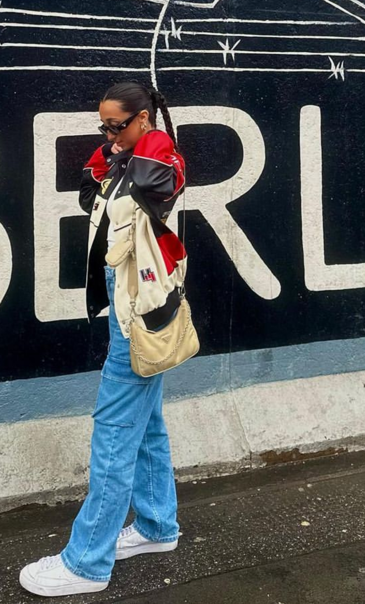
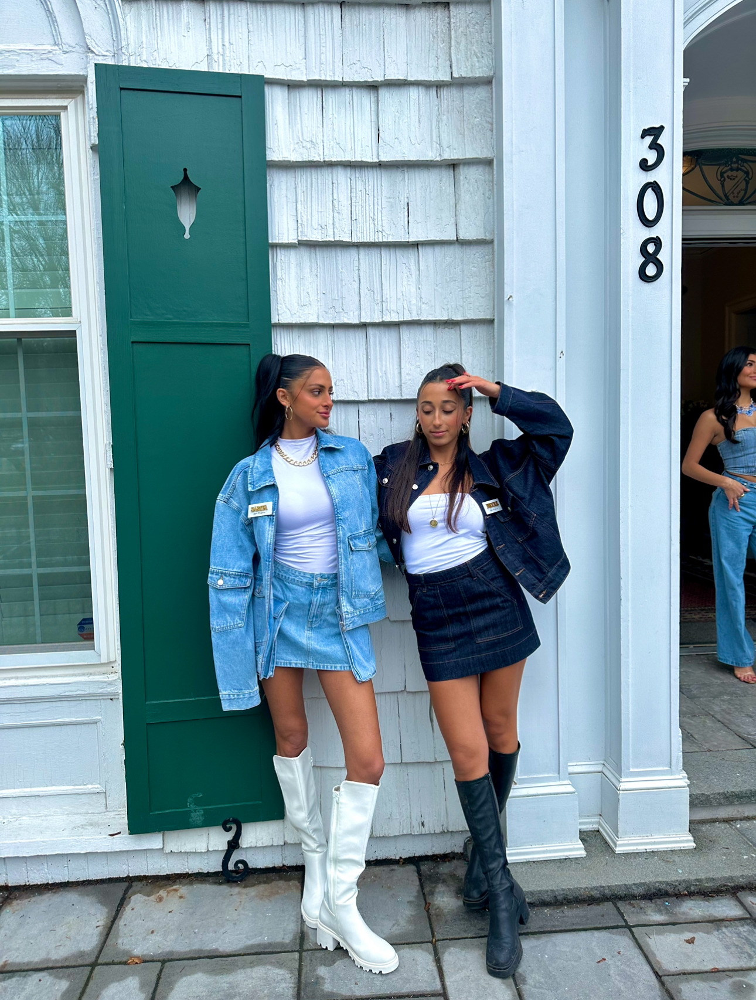
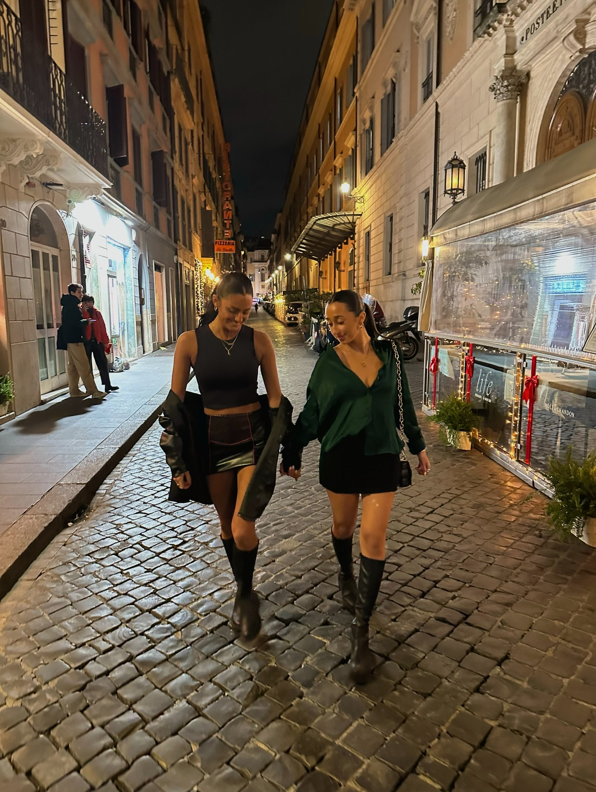

Fashion Handbook
Trends on the Rise
Bomber Jackets
What's behind it's massive appeal?
Bomber jackets have transcended into a staple of the fashion-forward wardrobe. With their sleek look and timeless style, it closes a gap between casual cool and polished elegance. What’s better than turning a simple outfit into a stylish masterpiece? With different textures, details, and a variety of colors, they add uniqueness and sophistication to any outfit. It’s so easy…You can throw one over a pair of jeans, cargo pants, a skirt, or any top and you’ll become an icon like any other influencer you might follow!
beginningboutique
nordstrom
revolve
urbanoutfitters
Tall Boots
What's behind it's massive appeal?
Tall boots are a significant stable in the fashion world for their functionality, versatility, and aesthetic appeal. Especially starting in January in Europe, tall boots are practical and can seamlessly transition from day to night. Nights in Paris? Days in Prague? These boots come in many different styles, materials, and colors and can fit any occasion. Celebrities and fashion influencers constantly showcase them as desirable and fashionable wardrobe items. Click down below for some classy and comfortable tall boots you can wear every day!
stevemadden
princesspolly
macys
reformation
Mini Skirts
What'behind it's massive appeal?
The risky skirt trend is taking over in 2024. Challenging traditional norms, miniskirts embrace a more open and modern attitude towards fashion. Empowering women to express themselves more freely, they create a bold fashion statement spreading confidence and individuality. Whether it’s a casual skirt, blouse, crop top, sweater, jacket, or even a blazer, a mini skirt goes well with anything! Personally, I loved pairing a black mini with a leather jacket and tall boots every night out in Europe! Click below to see some of my favorite skirts!
princesspolly
revolve
guizio
dolls kill
amazon
Trench Coats & Fur Coats
What's behind it's massive appeal?
Trench coats are a necessity and staple when traveling around Europe. Especially in the cold weather, these jackets do not only keep you warm, but they are stylish and comfortable. Styling a trench coat is easy; you can literally wear it over any outfit, and it gives it that pop and glamourous look. Fur coats have become my favorite trend of 2024. Aside from practical warmth, they make any outfit feel luxurious and sophisticated. They have become a huge statement piece due to their elegant, plush, and glamorous look. Trust me, you’ll need one! Some of my favorite coats are linked down below!
Trench Coats
aritzia
reformation
revolve
zara
Fur Coats
fur source
nordstrom